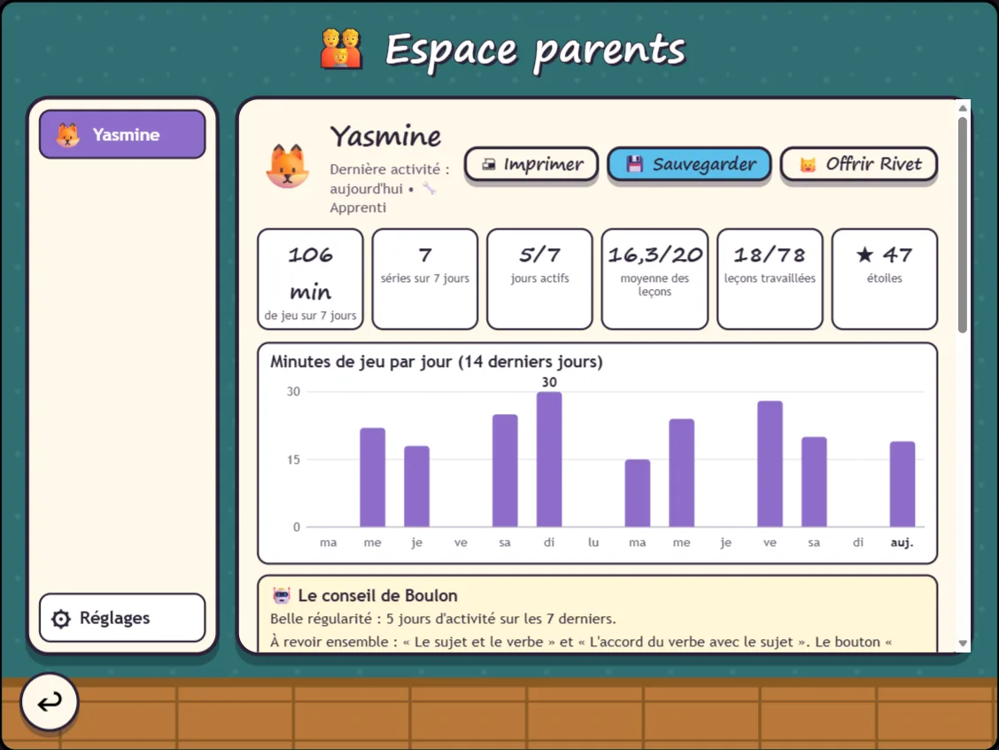
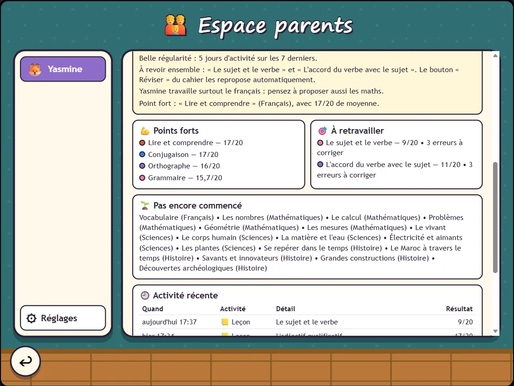
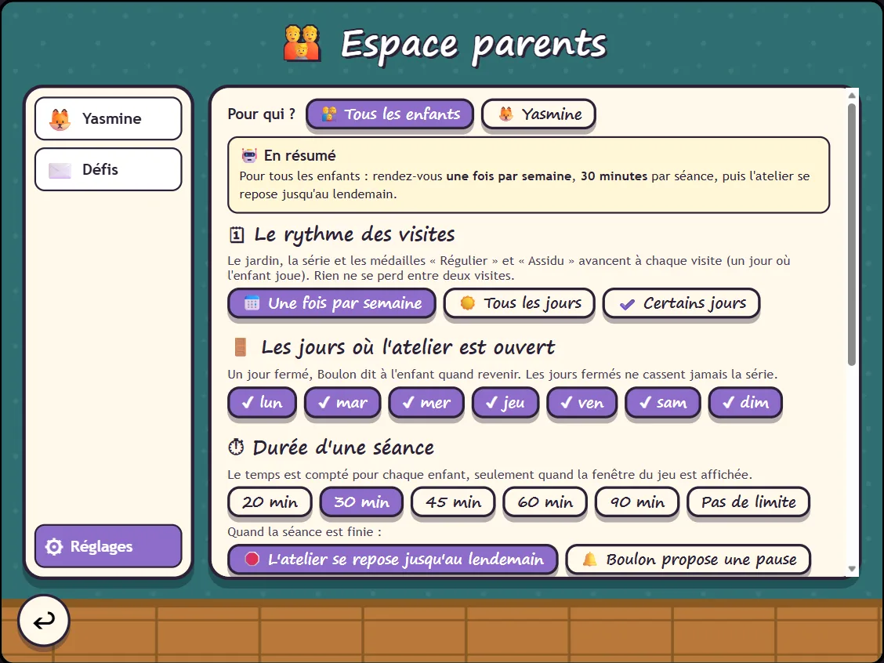

Guide des parents
Bien accompagner votre enfant avec Boulon
Comment fonctionne le jeu, comment l'utiliser à la maison, et tout ce que l'espace parents vous permet de suivre et de régler.
Pour bien commencer
Trois minutes, une seule fois.
- Choisissez la classe Ouvrez le jeu du CP ou du CE2 dans Edge ou Chrome, sur un ordinateur. Le CP est fait pour un enfant qui ne sait pas encore lire : Boulon dit tout à voix haute.
- Ajoutez votre enfant Son prénom et un avatar, c'est tout : pas de compte, pas d'adresse e-mail. Plusieurs enfants peuvent jouer sur le même ordinateur, chacun avec ses progrès.
- Choisissez votre code parent Sur l'écran « Qui vient travailler aujourd'hui ? », ouvrez Espace parents et choisissez un code à 4 chiffres. Réglez ensuite le rythme qui convient à votre famille.
Comment se passe une séance
Votre enfant joue seul, Boulon le guide pas à pas.
L'atelier
Chaque objet ouvre une matière. Au CP : le livre pour lire, l'ardoise pour la dictée, le boulier pour compter, le globe pour découvrir le monde.
La leçon
Boulon explique avec des images, puis pose des questions courtes. Quand l'enfant se trompe, il lui montre pourquoi.
Les révisions
Ce qui a été difficile revient de lui-même quelques jours plus tard, pour que rien ne s'oublie.
Les récompenses
Des étoiles, des écrous pour la boutique, un petit jardin, des médailles. Chaque visite fait pousser les plantes et avancer la série.
Nos conseils
Ce qui marche le mieux à la maison.
- Peu, mais souvent. Une séance de 20 à 30 minutes au rendez-vous choisi vaut mieux qu'une longue séance de temps en temps.
- Au CP, restez à côté au début. Écoutez Boulon avec votre enfant et montrez-lui le bouton jaune pour réécouter une consigne.
- Laissez-le se tromper. L'erreur fait partie de l'apprentissage : Boulon explique, et la leçon reviendra plus tard.
- Regardez le bilan ensemble, une fois par semaine. Félicitez l'effort et la régularité, pas seulement les résultats.
- Parlez de ce qu'il a appris. Un fruit au marché, un nombre sur une plaque, un son dans un prénom : c'est là que les leçons prennent tout leur sens.
Notre point fort
L'espace parents
Le jeu est fait pour l'enfant, l'espace parents est fait pour vous. Protégé par votre code, il vous dit en un coup d'œil où en est chaque enfant, et vous laisse décider quand et combien de temps il joue.

Voir où en est votre enfant
- Le temps de jeu et les jours actifs de la semaine.
- La moyenne, les leçons travaillées et les étoiles.
- Un graphique des 14 derniers jours, jour par jour.

Savoir quoi faire, en phrases simples
- Le conseil de Boulon : la régularité, les leçons à revoir ensemble, l'équilibre entre les matières.
- Les points forts et les leçons à retravailler.
- Ce qui n'est pas encore commencé, et les 10 dernières activités.

Décider du rythme
- Les rendez-vous : une fois par semaine, tous les jours, ou certains jours.
- Les jours où l'atelier est ouvert : un jour fermé, Boulon dit à l'enfant quand revenir.
- La durée d'une séance, de 20 à 90 minutes ou sans limite ; ensuite, Boulon propose une pause ou l'atelier se repose jusqu'au lendemain.
- L'heure du coucher de Boulon : le soir, l'atelier passe en mode nuit.
Pour chaque enfant
Les mêmes réglages pour toute la famille, ou des réglages propres à un enfant.
Votre code
Allonger une séance ou retarder le coucher le redemande. Code oublié ? Une multiplication d'adulte suffit.
Imprimer le bilan
Pour le garder, ou le montrer à l'enseignant.
Sauvegarder
Tous les enfants dans un fichier, pour changer d'ordinateur ou de navigateur.
Vos questions
Mon enfant ne sait pas encore lire : peut-il jouer ?
Oui. Au CP, toutes les consignes sont dites à voix haute, et le nom de chaque image est dit quand on la survole. Votre enfant répond en cliquant sur des images ou en déplaçant des étiquettes.
Le jeu suit-il un programme ?
Les leçons suivent ce qu'un enfant de cet âge peut apprendre, pas à pas : les sons avant les mots, les petits nombres avant les grands. Elles conviennent aux enfants du Maroc comme d'ailleurs.
Que se passe-t-il pendant les vacances, ou s'il ne joue pas quelques jours ?
Rien ne se perd. Le temps du jeu avance à chaque visite, pas au calendrier : le jardin et la série attendent tranquillement le retour de votre enfant.
Où sont gardés les progrès ?
Sur votre ordinateur, dans le navigateur. Rien n'est envoyé sur Internet : pas de compte, pas de publicité, pas de mesure d'audience. Pensez à sauvegarder les élèves dans un fichier depuis l'espace parents, surtout avant de changer d'ordinateur.
Combien ça coûte ?
Rien. Le jeu est gratuit et libre, sous licence GNU GPL v3.
Une autre question, une idée ? Donnez-nous votre avis.